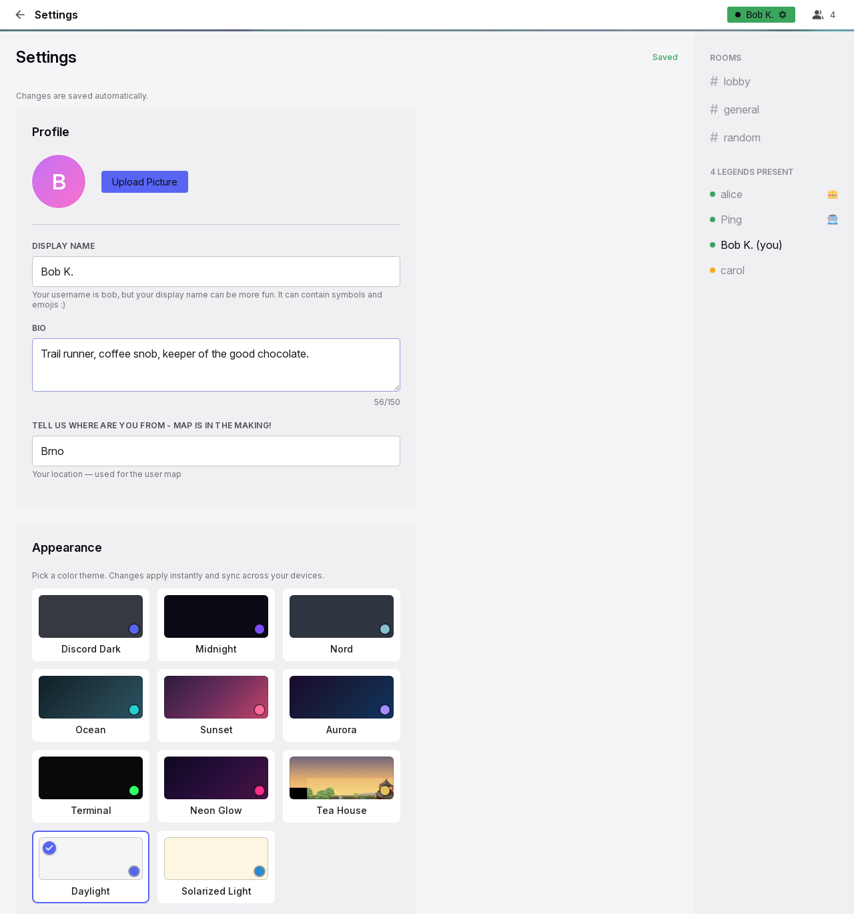

Settings
Settings is the one page where the user changes their profile, appearance, sign-in methods, devices, notifications, time format and GIF library. It opens from the status menu and from a few links in the app. Every change saves automatically. The page has no Save button.
Anatomy

- Frame. The same header and sidebar as a conversation. The title area shows a back arrow and "Settings".
- Page heading. "Settings", with a chip on the right and the line "Changes are saved automatically." For profile changes, the chip reads "Saving..." and then "Saved".
- Cards. One column of cards, at most 600 px wide, in this order: Profile, Appearance, Text Size, Login Link, Secret Code, Active Sessions, Install as App, Device Push Notifications, Allow / Mute Notifications, Time & Date, My GIFs, and a collapsed DEBUG INFO card at the end.
- Notice. An amber notice above the heading, with a close control. It shows after "Sign out all other devices".
Rules
Page
ST-01Settings opens from "Settings" and "Notification settings" in the status menu. It also opens from "Manage your GIFs in Settings" in the GIF picker. The bot's messages refer to Settings by name. "Notification settings" and the picker link scroll to their sections. A signed-out visit goes to the login page. Settings needs a connection.
ST-02Every control saves at once when its value changes. Profile text saves after a short pause in typing. It also saves when the user leaves the page, so no typed text is lost. A failed save shows "Could not save. Try again." next to the control.
ST-03On Settings, the sidebar and the header show live state, the same as on a conversation.
Profile
ST-04The avatar shows at 80 px with "Upload Picture" or "Change Picture". When a picture exists, "Remove" also shows. A picture can be any image up to 10 MB. The server crops the picture to a square. A rejected file shows "Choose an image up to 10 MB". Remove needs no confirmation.
ST-05Display Name holds up to 64 characters. Its placeholder is the username. Its hint says that the name can contain symbols and emoji. When Display Name is empty, the username is shown.
ST-06Bio holds up to 150 characters and has a live counter. Location holds up to 100 characters. Location has "Detect" when the server can find the country from the network address.
ST-07A profile change shows at once in the user's own header and on the user's messages. It also shows at once on the screens of other people.
Appearance and text size
ST-08Appearance shows a grid of theme cards. Each card has a preview, an accent dot and the name. The chosen card has a check badge. The themes are Discord Dark (the default), Midnight, Nord, Ocean, Sunset, Aurora, Terminal, Neon Glow, Tea House, Daylight and Solarized Light. A tap applies the theme to the whole app at once and saves it. When the saved theme no longer exists, the default theme applies.
ST-09Tea House changes its picture automatically every two hours, based on the time of day on the device.
ST-10Text Size has six presets: 14, 15, 16 (Default), 17, 18 and 20 px. Each preset shows as "Aa" at its size. A tap changes the size of all text at once and saves it. The account's other devices apply the theme and the text size at once.
Sign-in methods
ST-11Login Link starts with one line that summarises the sign-in methods of the account. The line is either "This account is tied to this device only." or the methods that the person has. The methods show in this order: login link, secret code, smart login.
ST-12With a link, the card shows the hint, the URL with its code masked, and Reveal and Copy. Then it shows "New Link", "Revoke" and the expiry choice. Without a link, the card shows the hint and "Create Login Link". The rules are on the sign-in page.
ST-13"Allow smart login" is a switch under the link. It shows only while the admin allows smart login. It is on by default.
ST-14Secret Code is below Login Link. Why: the link is the preferred sign-in method, and the code is the fallback. With a code, the card shows the masked code, Reveal and Copy, "New Code" and "Disable". Without a code, the card shows the hint and "Enable Secret Code". Status lines show for 3 seconds.
Devices
ST-15Active Sessions lists the account's connected devices. Each device has a phone or desktop icon, the network address and "Active {time}". The current device shows "This device" and is always listed. "Sign out all other devices" is always available, because a device can stay signed in without a connection. It acts without a confirmation. After it, the page shows the notice "All other devices have been signed out." with the new secret code, when one exists.
ST-16Install as App shows "Install Yap" with its explanation. Inside the installed app, it shows "Yap is installed as an app on this device." instead. See Offline and installation.
Notifications
ST-17Device Push Notifications shows the state of this device, the browser permission, the number of subscribed devices and the device list. Each device in the list has "Remove". The card shows one action that matches the state. The action is enable on this device or turn off on this device. When neither is possible, the card shows the reason. "Send a test to all devices" shows when there are devices.
ST-18Allow / Mute Notifications starts with the server-wide "Allow" or "Mute" with a duration. Below it are the "Direct messages" and "Rooms" rows, each with "Allow all", "Individual" and "Mute all". In Individual mode, a row lists its conversations, each with a bell. The rules are on the notifications page. The mute hint reads "Muted for another {time}." with the correct singular form. The hint counts down while the page is open.
Time & Date
ST-19"Your time" shows the current time in the user's time zone, with "−", "+" and "Detect". Yap detects the zone at sign-up. The zone stays until the user changes it here. "−" and "+" move the shown time by one hour from its current value. The offset from universal time stays within 14 hours in either direction. After an adjustment, the zone is a fixed offset and daylight saving no longer applies. "Detect" takes the zone from the browser again. The language detected at sign-up sets the defaults below. The language has no control of its own.
ST-20Clock offers 24-hour and 12-hour. Date order offers day-month-year, month-day-year and year-month-day. Separators shows when the detected language and the country of the zone use different formats. Each of the three is a row of cards. Each card shows the current time or today's date in its form. The card that matches the language is first. Each row works with the keyboard. The choices apply to every time in the app.
My GIFs
ST-21My GIFs shows the user's pool: every starred GIF plus the user's own uploads, in folders. The toolbar has folder chips ("All", "Unsorted", one per folder), a filter field, "＋ Add GIFs", "Import zip" and "Export". The filter field shows when there are nine or more GIFs. A quota bar shows "{used} of {quota} used" for the user's own uploads. Starred GIFs do not count against the quota.
ST-22Add accepts several .gif, .webp or short video files at once, up to 50 MB each. The files go into the open folder. A progress line shows, and one error line shows for each refused file. Import accepts one zip up to the configured size (1 GB by default). The zip can have at most 1000 files of 50 MB each. Its subfolders become folders. When it has a tag list, the tag list adds tags. Export downloads the pool as a zip that imports back without loss, except starred provider GIFs that the server never stored.
ST-23Cards show newest first. They refresh at once when a star or an upload elsewhere changes the pool. A card shows the preview, up to four tag chips and the folder choice. The user edits tags in place. Tags are converted to lowercase. Each tag has 2 to 64 characters. Tags belong to the GIF, so a change affects search for everyone who can see the GIF. The user creates a new folder from the folder choice, with a name of up to 64 characters. A folder disappears when it no longer holds a GIF.
ST-24"Delete" on one of the user's own uploads asks "Sure?" before it deletes the file. When the file is still used in chat or by others, it is removed from the pool instead. It still counts against the quota while it exists. "✕" removes the star at once. Six cards show first, then 24 more for each tap.
Debug
ST-25DEBUG INFO is a collapsed card. It shows what the browser keeps for Yap on this device: cached files by group with their size, and the storage estimate. It also has "Clear this cache" for the media cache. Clearing keeps drafts and unsent messages.
Phones
ST-26At 600 px or less, the avatar is above its buttons. The notification rows stack, with full-width controls and 44 px buttons. The link controls wrap. The GIF grid has two columns.
States
| State or trigger | Input | What the user sees |
|---|---|---|
| Typing in a profile field | keyboard | "Saving..." then "Saved" for 2 s. |
| Leaving the page right after typing | all | The edit is saved. |
| Picture chosen | mouse, touch | The avatar updates and "Saved" shows. A bad file shows "Choose an image up to 10 MB". |
| Theme tap | mouse, touch | The whole app changes to the new theme at once. |
| Text size tap | mouse, touch | All text changes size at once. |
| New Link, Revoke, expiry | mouse, touch | The link shows or is removed. A green status shows for 3 s. |
| New Code, Disable, Enable Secret Code | mouse, touch | The code shows or is removed. A green status shows for 3 s. |
| Sign out all other devices | mouse, touch | The other devices are signed out. The amber notice shows, and the code is revealed. |
| Enable push | mouse, touch | The browser asks for permission. "Subscribed" shows, and a device row appears. |
| Send a test | mouse, touch | Every device gets the test notification. A result line shows for 3 s. |
| Mute picked | mouse, touch | The direct message and room rows are hidden. The card shows "Muted until you turn notifications back on." |
| Mute with a duration | mouse, touch | "Muted for another {time}." |
| Individual mode | mouse, touch | A bell for each conversation shows under the row. |
| − or + on the time | mouse, touch, keyboard | The shown time moves by one hour, and the change is saved. |
| Date order or clock card | mouse, touch, keyboard | Times change everywhere in the app. |
| Add GIFs | mouse, touch | A progress line shows. Cards appear. Errors show in a red strip. |
| Tag chip tap | mouse, touch | An inline tag input opens. Enter saves and Escape cancels. |
| Delete own upload | mouse, touch | "Sure?", then the card disappears, or the GIF is removed from the pool with a note. |
Wording
| Where | Text |
|---|---|
| Page | "Settings"; "Changes are saved automatically."; "Saving..."; "Saved" |
| Notice | "All other devices have been signed out."; "Your login link keeps working."; "Your secret code was automatically changed. See the new one below." |
| Page | "Could not save. Try again." |
| Profile | "Profile"; "Upload Picture"; "Change Picture"; "Uploading..."; "Remove"; "Choose an image up to 10 MB"; "Display Name"; "Your username is {username}, but your display name can be more fun. It can contain symbols and emojis :) "; "Bio"; "Why are you awesome..."; "{n}/150"; "Tell us where are you from - map is in the making!"; "Your location — used for the user map"; "London"; "Detect" |
| Appearance | "Appearance"; "Pick a color theme. Changes apply instantly and sync across your devices."; "Discord Dark"; "Midnight"; "Nord"; "Ocean"; "Sunset"; "Aurora"; "Terminal"; "Neon Glow"; "Tea House"; "Daylight"; "Solarized Light" |
| Text Size | "Text Size"; "Scales all text in the app. Applies instantly and syncs across your devices."; "Aa"; "14px"; "15px"; "Default"; "17px"; "18px"; "20px" |
| Login Link, Secret Code, Active Sessions | see the sign-in page |
| Install | "Install as App"; "Install Yap to your home screen for a full-screen experience with push notifications and quick access."; "Install Yap"; "Yap is installed as an app on this device." |
| Push and mutes | see the notifications page; mute time "1 minute", "{n} minutes", "1 hour", "{n} hours", "1 day", "{n} days", "a moment" |
| Time & Date | "Time & Date"; "Your time"; "−"; "+"; "−1 hour"; "+1 hour"; "Detect"; "Adjust if the time doesn't match your clock"; "Clock"; "Date order"; "Separators"; "Detected: {time zone} · {locale}" |
| My GIFs | "My GIFs"; "Your GIF pool — everything you've starred plus your own uploads. Organize with folders, edit search keywords, or bring a whole collection: import files or a zip, and export everything as a zip you can take anywhere."; "All"; "Unsorted"; "Filter by keyword…"; "＋ Add GIFs"; "Uploading…"; "Import zip"; "Export"; "{used} of {quota} used"; "Only your own uploads count — starred GIFs are free"; "Uploading… {p}% ({done} of {total})"; "Importing… {done} of {total}"; "Imported {done} of {total}"; "processing…"; "add keywords…"; "+{n}"; "comma, separated, tags"; "(unsorted)"; "＋ New folder…"; "folder name"; "Delete"; "Sure?"; "Still used in chat or by others — removed from your library instead."; "You can only delete your own uploads."; "Nothing here yet — star GIFs in the picker, or add your collection above."; "No GIFs match your filter."; "Nothing in this folder."; "Show 24 more ({n} left)"; "Show {n} more"; "Show less"; "ffmpeg not detected — video conversion is off, only .gif/.webp files can be imported." |
| My GIFs errors | "\"{name}\" — unsupported file type"; "\"{name}\" — too large ({n} MB, max {m} MB)"; "\"{name}\" — {error}" with "upload failed" when there is none; "GIF storage quota exceeded"; "Not allowed"; "Could not process this file as a GIF"; "Upload failed — something went wrong."; "GIF storage quota exceeded — import stopped"; "import failed — the zip could not be read"; " ({n} skipped)"; " — {n} skipped" |
| Debug | "DEBUG INFO"; "Reading cache…"; "Cache report unavailable."; "Cached files"; "1 file" or "{n} files" with "· {size}"; "Origin storage estimate"; "{used} of {quota}"; groups "Media — saved chat attachments", "App — offline interface", "Emoji — downloaded artwork"; "Empty"; "Clear this cache"; "Clearing a cache keeps your locally saved drafts and outgoing messages." |
Related
- Sign-in and sessions for the link, the code and the devices.
- Notifications and unread for the two notification sections.
- Emoji and GIF pickers for where the GIF pool is used.
- Message row and actions for how times are shown.
- Offline and installation for the install section.
- Header, sidebar and overlays for the frame around the page.